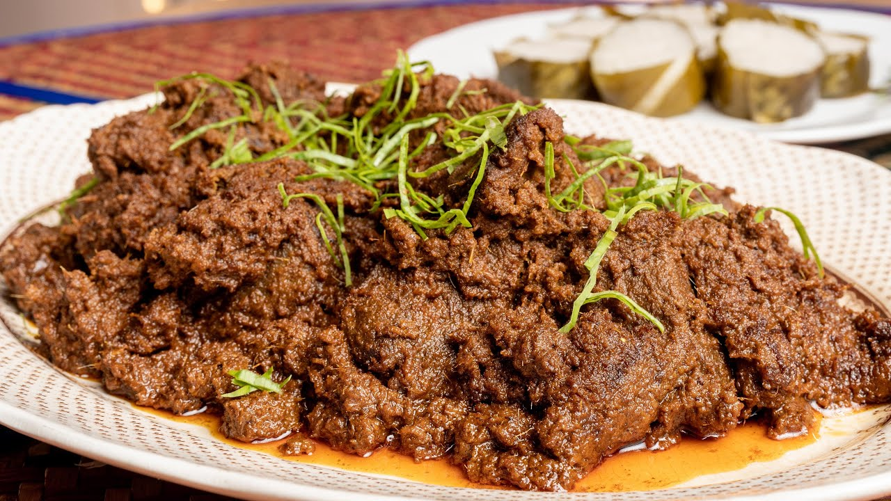
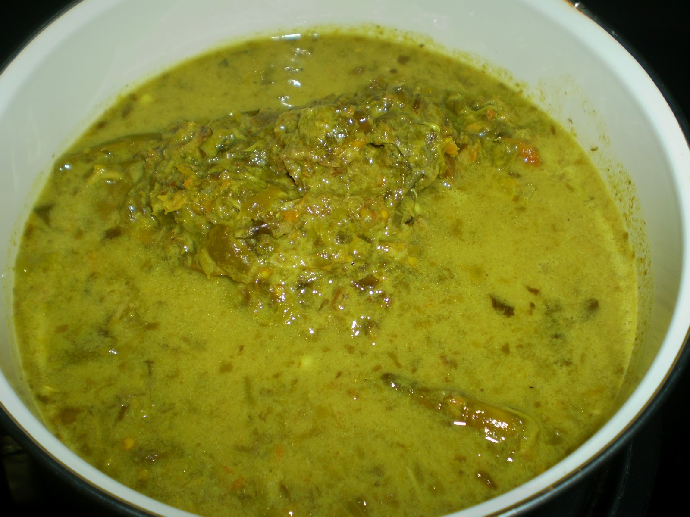

Rendang Tok is said to originate from Kampung Pisang, located in Batu Gajah, Perak. It uses beef as its main ingredient, and unlike most other rendang, it is cooked with both coconut milk and toasted grated coconut (kerisik).

1.Rendang Tok
Nasi lemuni, also known as legundi, is dark green in color because it is cooked with lemuni leaves. However, these leaves are rarely found in stores and usually grow in rural areas. This dish is popular around Kuala Kangsar and Lenggong and is typically eaten with dried shrimp sambal or anchovy sambal. It is also suitable to be served to women who are in confinement after giving birth.
2.Nasi Lemuni
This yellow-colored curry was once a special dish served to one of the Sultans of Perak in ancient times when His Majesty visited a village in Lenggong. It is also famous in Pahang. Kemahang leaves are hard to find and the plant only grows in forested areas. The curled leaves need to be washed thoroughly to ensure no dirt remains on them. In the past, this curry was often served at village feasts.

3.Gulai Kemahang
Unlike northern laksa, the laksa originating from Kuala Kangsar is made entirely from wheat flour without mixing in rice flour. Its broth, made using Indian mackerel, is slightly thin and more sour compared to northern laksa.
4.Laksa Kuala
Pais is a type of dish made from fish mixed with various spices and cooked in a banana leaf wrap. Pais ikan keramat is a traditional Malay dish from Lenggong, which is located near the Perak River. It uses small fish like anchovies and can be cooked either by grilling or steaming.
5.Pais Ikan Keramat
This dish, popular among the residents of Lenggong and Gerik, is a favorite among fishermen and farmers because it can be stored for weeks. It is not a regular omelet as we usually eat, but it is made using the roe of the Loma fish itself, mixed with a little egg white as a binder. Loma fish are plentiful in the Perak River.
6.Telur Dadar Ikan Loma
One of Perak's traditional foods that is becoming extinct, it can still be found in the Lenggong area. It is made using river fish marinated with ingredients and spices, and wrapped in seniar leaves. This dish is boiled for 12 hours or up to three days so that the ingredients blend together and the fish bones become soft. The seniar leaves used to wrap it can also be eaten.
.png)